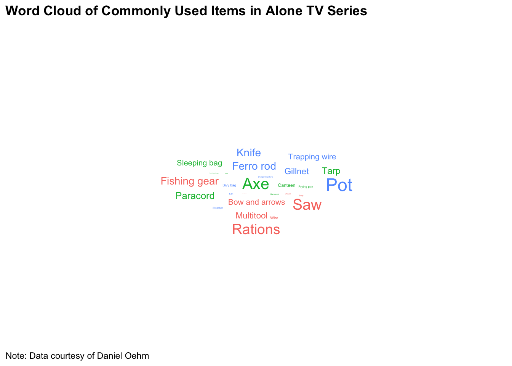

Tidy Tuesday 1-25-23
For today’s #TidyTuesday (January 25, 2023)1, we are looking at the survival TV series Alone which has run since 2015 across 10 seasons. The premise of the show is to put individuals into sparsely populated areas as they try to survive. For today’s visualization we will be looking at the loadouts data set in the alone package2. This data set contains information on the participant, the season in which the participant appeared on the show, and the most commonly used items.
For this visualization, creating a word cloud would be a very interesting way to visualize which items are most commonly discarded. To attempt this visualization we will need the tidyverse,ggtext, and ggwordcloud packages. To start we want to download the data. You can find the file here. The code below shows loading in the appropriate packages and reading in the data
After we have downloaded the data, we will need to modify the data a little bit to get some of the information that we will need in the format that we need it in. For the word cloud we need to aggregate the items and count the number of times said item taken. To do this we will need to sum the number of items by group. That code can be shown below
I have added a color variable to add color to the word cloud labels later
Once initial data wrangling has been done, it is time to actually start the visualization. To do this we are going to feed our data into a ggplot2 pipeline. We will be assigning the item variable to the label argument and the n_item variable to the size argument. This will tell ggplot to label the word cloud with the appropriate labeling convention while mapping the size of the word to the number of times it is discarded in total across the 10 seasons.
For aesthetic purposes, I’ve decided to make the word cloud figure diamond shaped but there are multiple shapes one could use (e.g., a circle).
p <- data %>% ggplot(aes(label = item, size = n_item, color = color)) +
geom_text_wordcloud_area(show_boxes = FALSE,
shape = "diamond") +
scale_size_area(max_size = 12)Below we see what the code above generates. This looks reasonably good but we can do some more with this graphic such as adding a title, doing some theme changes, adding a caption, and ensuring there is some alt text describing the graphic embedded in the webpage that should be available if one inspects the HTML

To add the title, caption and alt text, we can use the code shown below
p <- p +
labs(title = "**Figure 1**. Word Cloud of Commonly Used Items in *Alone*",
caption = "Note: Data courtesy of Daniel Oehm",
alt = paste("A word cloud of mostly commonly discarded items on Alone")) +
theme_minimal() +
theme(plot.title = element_markdown()) +
theme(plot.caption = element_text(hjust = 0))The above code gets us the following graphic. Quite honestly I think this looks good

I hope you’ve enjoyed this quick data visualization. Let me know what changes you might make in the comments below